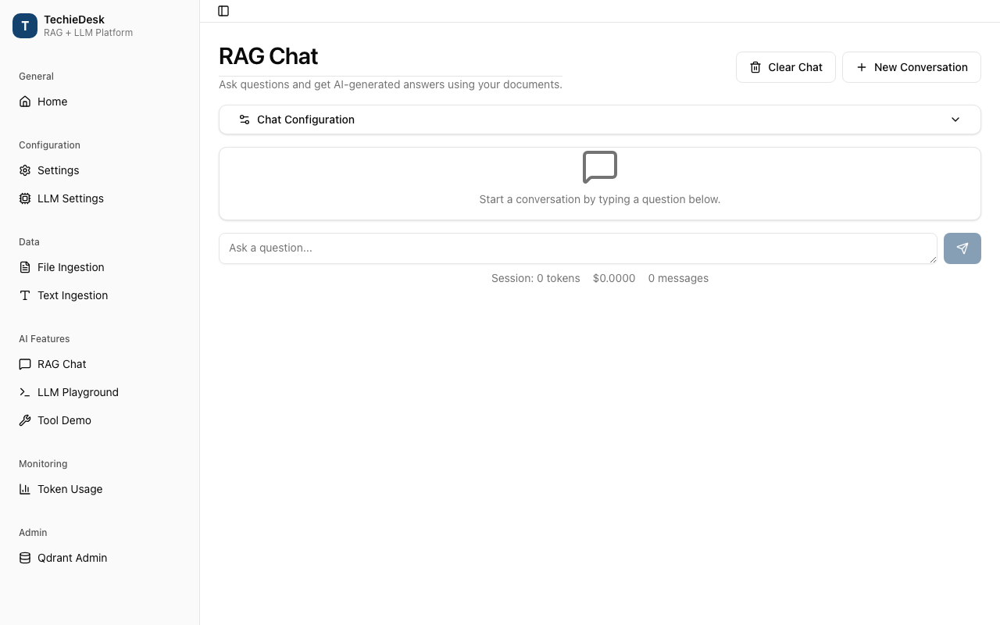
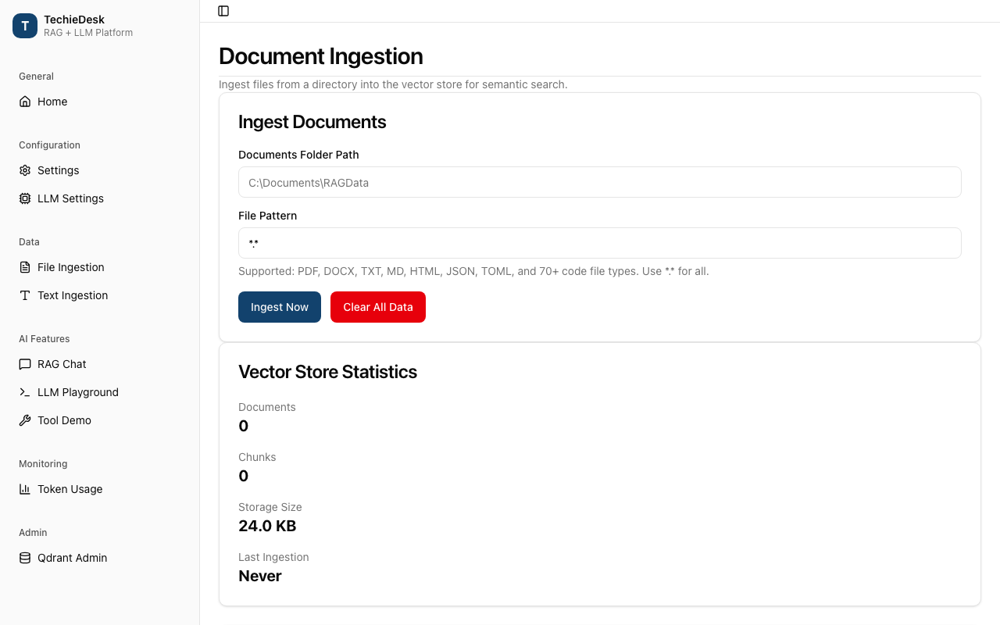
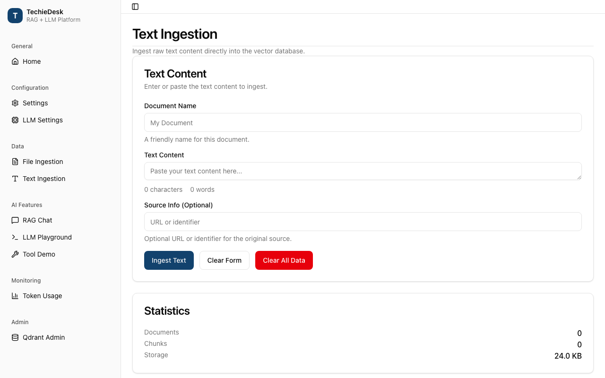
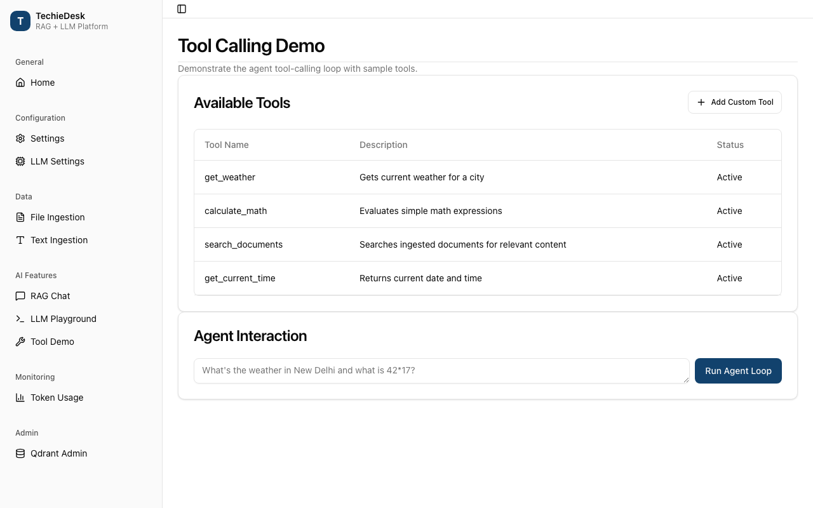
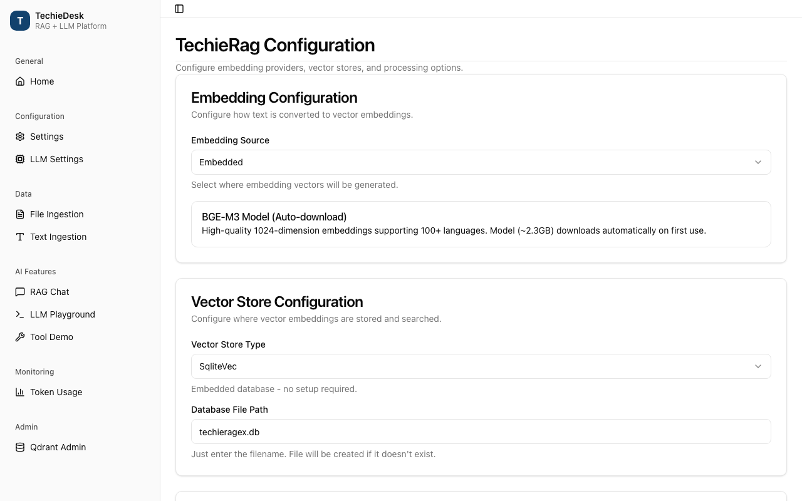
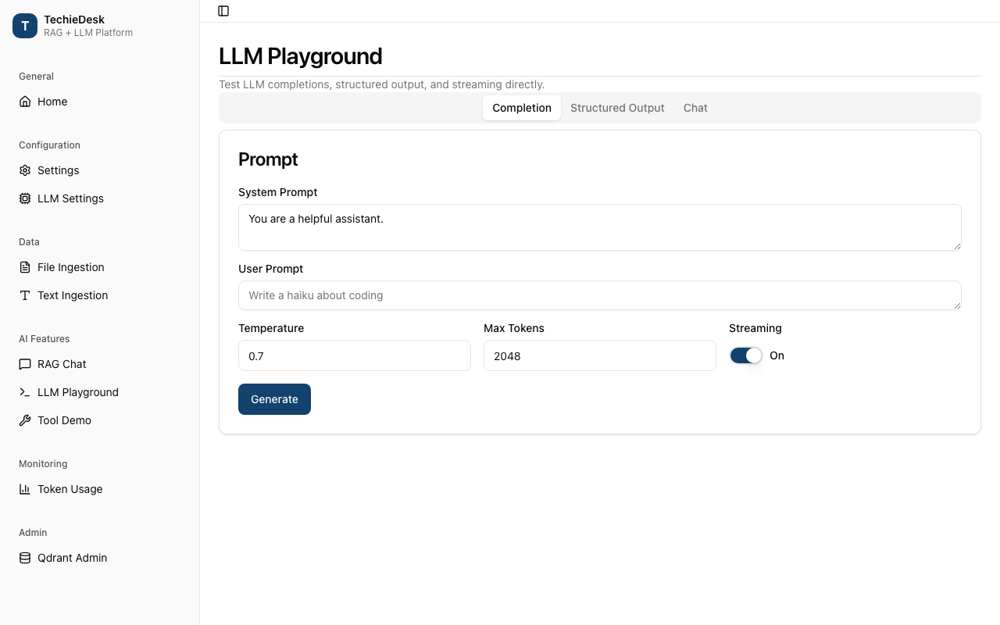
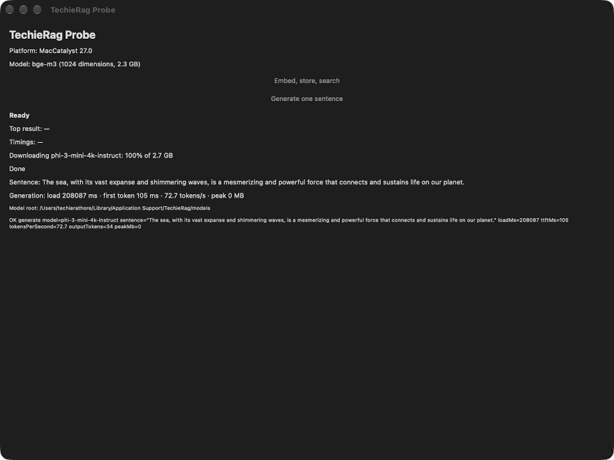
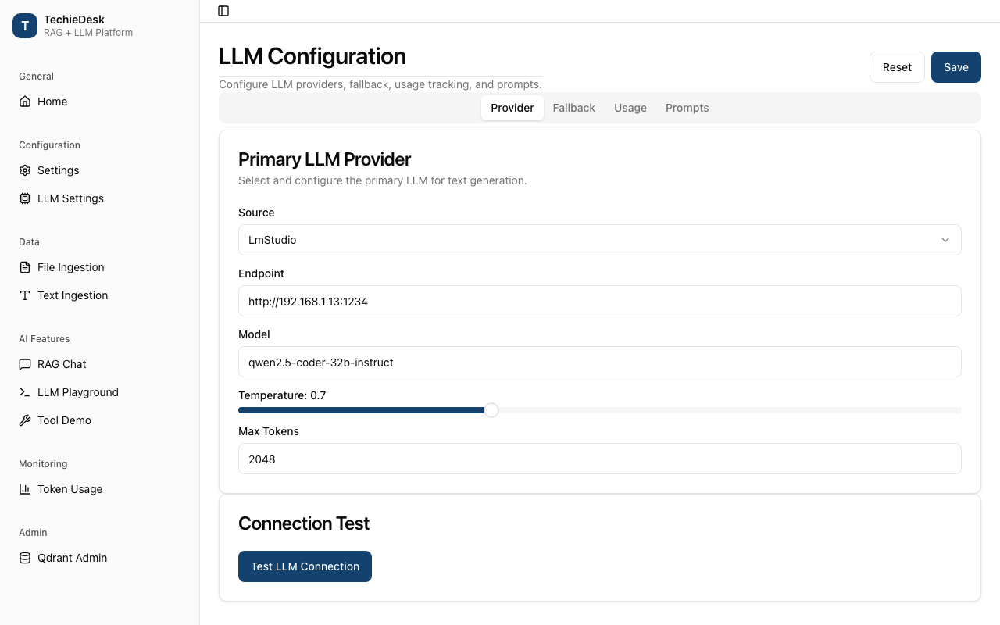

TechieRag — Developer Guide
TechieRag-P3-DevGuide.md- Architecture cheat-sheet
- Screen-by-screen code map
- Workspace pinning and testing: WorkspaceManager, IWorkspaceManager (TechieRag)
- Connector run results: ConnectorRunner, ConnectorItemFailure, MimeParser (TechieRag)
- Document replace on re-ingest: ITechieRag.IngestTextAsync(text, name, sourceKey, metadata) (TechieRag)
- Tool registry: ToolRegistry.Register (TechieRag)
- Storage defaults: DataRoot, UseSqliteVec(), WithPersistence(provider, connectionString = null, defaultUserId) (TechieRag)
- Flow step names and model use: FlowNodeCatalog.CreateNode, FlowDefinition.UsesLanguageModel (TechieRag)
- Local model fit check: LocalLlmProvider.IsRuntimeAvailable, LocalModel.EstimateRequiredMemoryBytes, AvailableMemory.Read (TechieRag.Local)
- Model routing: LlmProviderFactory.ListModelsAsync, CreateForModel(…, endpoint) (TechieRag)
- Model choice: ModelChooser, IModelChooser (TechieRag)
- Cross-cutting flows
- Configuration
- Logging and errors
- Known issues
| App | TechieRag |
| Kind | library |
| Size | Small |
| Phase | 3 of 3 |
| Verified on | 2026-10-08 |
| Date | 2026-10-08 |
This guide maps the eight public surfaces phase 3 changed to the code that serves them, read at file and line on 2026-10-06 and re-read on 2026-10-07 and 2026-10-08: workspace pinning and testing, connector run results, document replace on re-ingest, the tool registry, storage defaults, flow step names and model use, the local model fit check, and model routing (REQ-RAG-114 to REQ-RAG-127, BRD-174 to BRD-187). Phase-1 services are in docs/TechieRag-DevGuide.md, phase-2 services in docs/TechieRag-P2-DevGuide.md.
No sample calls any phase-3 surface: the probe (samples/TechieRag.Probe) only embeds, stores, searches and generates. So every entry is static-only (unconfirmed) at runtime. What was run on 2026-10-06 is the build (bash .tfcore/utils/tf-build.sh: PASS, rung 2, 0 warnings) and each requirement's tests, one filter per id (~/.dotnet/dotnet test tests/TechieRag.Tests/TechieRag.Tests.csproj --no-build --filter "DisplayName~REQ-RAG-<id>"): 53 tests, 0 failed. On 2026-10-07 the Sevak fixes (TR-RAG-049 in storage defaults, TR-RAG-047 as the new local model entry) were built and verified: build PASS, every test project run on its own, 0 failed. The other entries' file and line references were re-checked against the code that day and still hold. Each entry gives its counts. The images are the July 2026 screens of the sample application of that time (TechieDesk, now Sevak, in its own repository); they predate phase 3 and show where a host would use the surface, not the change itself. Line numbers are as of "Verified on"; when a line has moved, search for the function named in the same row.
Architecture cheat-sheet#
flowchart LR Host["Host application"] --> DI["AddTechieRag / TechieRagBuilder"] DI --> Client["TechieRagClient : ITechieRag"] DI --> IWM["IWorkspaceManager (stand-in or WorkspaceManager)"] IWM --> Client Client --> Store["IVectorStore.SearchDocumentsAsync (Sqlite, Pg, Qdrant)"] Host --> Ingest["IngestConnectorAsync"] --> Runner["ConnectorRunner"] Ingest --> Client Runner --> Mime["MimeParser (EmailConnector)"] DI --> Data["DataRoot: data/<app>/techierag.db"] Host --> Flow["FlowNodeCatalog / FlowDefinition"] Host --> Tools["ToolRegistry"] --> Loop["AgentLoopRunner"] Host --> Fit["LocalLlmProvider.IsRuntimeAvailable, LocalModel.EstimateRequiredMemoryBytes, AvailableMemory.Read"] Fit --> Gate["MemoryGate before the download"] --> Store2["LocalModelStore.EnsureAsync"] Host --> Route["LlmProviderFactory.ListModelsAsync / CreateForModel(endpoint)"] --> Lister["LlmModelLister"]
| Layer | Project or folder | What lives here |
|---|---|---|
| Public entry points | src/TechieRag/ITechieRag.cs, TechieRagBuilder.cs, DependencyInjection/ | keyed IngestTextAsync, UseSqliteVec(), the IWorkspaceManager registration |
| Workspaces | src/TechieRag/Services/WorkspaceManager.cs, Abstractions/IWorkspaceManager.cs | pinned retrieval, the test seam |
| Search | src/TechieRag/TechieRagClient.cs, Models/SearchOptions.cs, VectorStores/ | document-set search, rerank resolution |
| Connectors | src/TechieRag/Connectors/, Connectors/Email/ | partial run results, item outcomes, mail parse notes |
| Storage defaults | src/TechieRag/Models/DataRoot.cs, Persistence/Sqlite*Store.cs | the per-app database location |
| Tools and flows | src/TechieRag/Services/ToolRegistry.cs, Orchestration/ | tool replace, step names, model use |
| Model routing | src/TechieRag/Llm/LlmProviderFactory.cs, Llm/LlmModelLister.cs | model listing, the per-call endpoint |
| Local model fit check | src/TechieRag.Local/ (LocalLlmProvider.cs, LocalModel.cs, AvailableMemory.cs, LocalModelStore.cs) | the pre-download reads, the early memory refusal, per-provider progress |
| Tests | tests/TechieRag.Tests, tests/TechieRag.Local.Tests, tests/TechieRag.Agents.Tests | the phase-3 test files named per entry, plus the shared overload check (PublicApi/OverloadShapeCheck.cs, linked into all three) |
Screen-by-screen code map#
Workspace pinning and testing: WorkspaceManager, IWorkspaceManager (TechieRag)#

REQ-RAG-114, REQ-RAG-115, REQ-RAG-116. Covered by tests/TechieRag.Tests/Services/WorkspacePinnedRetrievalTests.cs.
Runtime: static-only (unconfirmed); tests run 2026-10-06: REQ-RAG-114 4 passed, REQ-RAG-115 4 passed, REQ-RAG-116 3 passed.
Call chain: WorkspaceManager.AskAsync / BuildContextAsync → ComposeContextAsync → ResolveScopeAsync → SearchInScopeAsync → CollectPinnedChunksAsync → TechieRagClient.SearchAsync(question, SearchOptions { DocumentFilters, Rerank }) → ResolveRerank → IEmbeddingProvider.EmbedAsync → IVectorStore.SearchDocumentsAsync (SQLite DocumentId IN (...), Postgres = ANY, Qdrant Should) → ApplyRerankAsync when on → ApplyContextBudget. Stand-in: AddTechieRag → TryAddSingleton<IWorkspaceManager>(ITechieRag.GetWorkspaceManager()).
CollectPinnedChunksAsync sends every in-scope pinned id down as DocumentFilters, so five pinned documents cost one embedding and one store query. It asks for ids × 3 × 5 chunks, groups by document and keeps 3 each. A pinned document that won no slot is searched alone as a fallback, so it stays in context (BRD-44). Both searches pass Workspace.RerankEnabled, so the workspace switch decides reranking for pinned results in both directions, never the library default.
IVectorStore.SearchDocumentsAsync is a default interface method that loops per document; the three built-in stores override it with one filtered query. IWorkspaceManager mirrors WorkspaceManager's public members; GetWorkspaceManager() still returns the concrete type (owner decision 2026-10-06), and TryAdd keeps a stand-in the host registered first.
| File and line | Function | Watch | Expected value |
|---|---|---|---|
src/TechieRag/Services/WorkspaceManager.cs:711 | CollectPinnedChunksAsync | pinnedIds | distinct in-scope pinned ids; empty returns at line 709 |
src/TechieRag/Services/WorkspaceManager.cs:716 | CollectPinnedChunksAsync | TopK, Rerank | pinnedIds.Count × 15; workspace.RerankEnabled (line 718) |
src/TechieRag/Services/WorkspaceManager.cs:729 | CollectPinnedChunksAsync | byDocument.TryGetValue | true for every id in the usual case; false runs the fallback search |
src/TechieRag/TechieRagClient.cs:479 | SearchAsync | options.DocumentFilters | non-empty takes SearchDocumentsAsync; else SearchAsync with DocumentFilter |
src/TechieRag/VectorStores/SqliteVecStore.cs:389 | ScoreAllChunks | sql | ... AND DocumentId IN (?1, ..., ?n) |
src/TechieRag/DependencyInjection/ServiceCollectionExtensions.cs:87 | AddTechieRag | the registered IWorkspaceManager | the host's stand-in when registered first, else the client's WorkspaceManager |
Calculations on this service: pinned TopK = pinned ids × PinnedChunksPerDocument (3) × OversampleFactor (5) (WorkspaceManager.cs:47-48, :716); fetchCount = max(topK, Rerank.CandidateCount) when reranking (TechieRagClient.cs:476).
Connector run results: ConnectorRunner, ConnectorItemFailure, MimeParser (TechieRag)#

REQ-RAG-117, REQ-RAG-118, REQ-RAG-119. Covered by Connectors/ConnectorPartialRunTests.cs and Connectors/Email/MailParseNotesTests.cs.
Runtime: static-only (unconfirmed); tests run 2026-10-06: REQ-RAG-117 6 passed, REQ-RAG-118 5 passed, REQ-RAG-119 5 passed.
Call chain: ConnectorIngestionExtensions.IngestConnectorAsync → ConnectorRunner.RunAsync → RunCoreAsync → IDataConnector.ListAsync → size check → IDataConnector.FetchAsync (EmailConnector.FetchAsync → MimeParser.Parse → ReadPart → AddNote) → onDocument → ITechieRag.IngestTextAsync; on cancel catch OperationCanceledException → BuildPartialResult → throw ConnectorRunCanceledException; on failure ConnectorException.PartialResult set → rethrow; both re-wrapped by IngestConnectorAsync with PartialIngestion.
A cancelled run throws ConnectorRunCanceledException, an OperationCanceledException, so existing cancel handling still catches it; PartialResult holds the documents, failures and sync state so far. A run that fails part-way puts the same on ConnectorException.PartialResult. The partial sync keeps the previous run's LastRunUtc, since advancing it would hide unreached items, and keeps every item version finished this run, so the next run sees them as unchanged. Nothing is pruned.
ConnectorItemFailure.Outcome is Failed by default; an over-size item and an item with no text are Skipped. The size reason is built with the invariant culture: digits, no separator. BuildMetadata and ConnectorDocumentKey are public.
MimeParser records a part nested past MaxNestingDepth (10) as MailParseCodes.NestingTooDeep, and an attachment past 1,000 as AttachmentLimitReached, on ParsedMailMessage.Notes, at most 100 notes.
| File and line | Function | Watch | Expected value |
|---|---|---|---|
src/TechieRag/Connectors/ConnectorRunner.cs:194 | RunCoreAsync | the Reason string | Skipped: <size> bytes exceeds the <max>-byte limit for one item., plain digits; Outcome Skipped (198) |
src/TechieRag/Connectors/ConnectorRunner.cs:264 | RunCoreAsync | sync.ItemVersions[item.Id] | set only after a successful fetch and hand-over |
src/TechieRag/Connectors/ConnectorRunner.cs:294 | RunCoreAsync (cancel catch) | fetchedCount | items finished before the cancel; 3 in the acceptance case |
src/TechieRag/Connectors/ConnectorRunner.cs:358 | BuildPartialResult | LastRunUtc | previousSync?.LastRunUtc, never now |
src/TechieRag/Connectors/ConnectorIngestionExtensions.cs:87 | IngestConnectorAsync | PartialIngestion | ids ingested so far, run failures then ingestion skips, partial sync |
src/TechieRag/Connectors/Email/MimeParser.cs:301 | ReadPart | depth | above 10 adds a NestingTooDeep note (303) and returns |
Calculations on this service: none beyond counting; the note's PartName is the decoded file name, else the media type, else (unlabelled) (MimeParser.cs:279-283).
Document replace on re-ingest: ITechieRag.IngestTextAsync(text, name, sourceKey, metadata) (TechieRag)#

REQ-RAG-120. Covered by Ingestion/KeyedTextIngestionTests.cs.
Runtime: static-only (unconfirmed); tests run 2026-10-06: REQ-RAG-120 6 passed.
Call chain: TechieRagClient.IngestTextAsync(text, documentName, sourceKey, metadata) → IngestTextCoreAsync → DocumentIdForKey(sourceKey) → TextChunker.ChunkText → EmbedAndStampAsync → IVectorStore.DeleteByDocumentAsync(documentId) → IVectorStore.UpsertBatchAsync. Connectors: IngestConnectorAsync → ConnectorDocumentKey(connector, item) → the same overload.
The new overload sits beside the old one; a null or empty key behaves exactly like it, with a fresh GUID. With a key, the document id is a GUID built from the SHA-256 of techierag-source-key:<key>, so every call with that key addresses one document and its workspace memberships survive. The new text is chunked and embedded first; only then are the old chunks deleted and the new ones stored, so a failed embedding leaves the earlier copy rather than nothing. The key is stamped on each chunk as DocumentMetadataKeys.SourceKey.
ITechieRag carries a default implementation for third-party clients: it lists documents, deletes those whose SourceKey matches, then ingests with the key in the metadata. That order deletes before embedding, and the id is not stable.
Connector ingestion passes connector:<source type>:<source name>:<item id>, not the bare item id, so two connectors with an item called INBOX/1 never replace each other.
| File and line | Function | Watch | Expected value |
|---|---|---|---|
src/TechieRag/TechieRagClient.cs:253 | IngestTextAsync (keyed) | sourceKey | null for empty, otherwise unchanged |
src/TechieRag/TechieRagClient.cs:285 | IngestTextCoreAsync | documentId | same GUID for the same key on every call and process |
src/TechieRag/TechieRagClient.cs:332 | IngestTextCoreAsync | chunk.Metadata["SourceKey"] | the caller key |
src/TechieRag/TechieRagClient.cs:351 | IngestTextCoreAsync | DeleteByDocumentAsync(documentId) | reached only after EmbedAndStampAsync returned |
src/TechieRag/ITechieRag.cs:74 | IngestTextAsync (default) | stored | the listed document's SourceKey; equal to the key means deleted (77) |
src/TechieRag/Connectors/ConnectorIngestionExtensions.cs:130 | ConnectorDocumentKey | the return | connector:Email:<name>:<item id> for a mail item |
Calculations on this service: DocumentIdForKey (TechieRagClient.cs:260): the first 16 bytes of SHA-256("techierag-source-key:" + key) as a GUID.
Tool registry: ToolRegistry.Register (TechieRag)#

REQ-RAG-121. Covered by Services/ToolRegistryReplaceTests.cs.
Runtime: static-only (unconfirmed); tests run 2026-10-06: REQ-RAG-121 3 passed.
Call chain: ToolRegistry.Register(name, description, parametersSchema, handler) (the synchronous overload wraps its delegate and calls it) → definitions.FindIndex (case-insensitive) → replace in place or Add → handlers[name] = handler. At answer time: AgentLoopRunner.BuildToolOptions → LlmCompletionOptions.Tools = toolHandler.ToolDefinitions → the provider's tool list; ToolRegistry.ExecuteToolAsync → handlers.TryGetValue.
Before phase 3 a second registration replaced the handler but appended a second definition, so the model saw the name twice with the stale description. Now Register looks for an existing definition by name, ignoring case like the handler dictionary, and overwrites it at the same index, so the tool keeps its place in ToolDefinitions and the description the model reads belongs to the handler that runs. A new name is appended.
ToolDefinitions is the live list, not a copy; GuardedToolHandler and CompositeToolHandler read through it, so they see the replacement too.
| File and line | Function | Watch | Expected value |
|---|---|---|---|
src/TechieRag/Services/ToolRegistry.cs:57 | Register | existing | −1 on the first registration; the earlier index on a repeat, any case |
src/TechieRag/Services/ToolRegistry.cs:60 | Register | definitions[existing] | the new description and schema |
src/TechieRag/Services/ToolRegistry.cs:67 | Register | handlers.Count | unchanged on a repeat (case-insensitive key) |
src/TechieRag/Services/AgentLoopRunner.cs:227 | BuildToolOptions | Tools | each registered name once |
src/TechieRag/Services/ToolRegistry.cs:90 | ExecuteToolAsync | handler | the last registered delegate for that name |
Calculations on this service: none.
Storage defaults: DataRoot, UseSqliteVec(), WithPersistence(provider, connectionString = null, defaultUserId) (TechieRag)#

REQ-RAG-122. Covered by Persistence/DefaultDatabaseLocationTests.cs, Persistence/PersistenceOverloadTests.cs and PublicApi/OverloadShapeTests.cs (Sevak TR-RAG-049, 2026-10-07).
Runtime: static-only (unconfirmed); tests run 2026-10-07: REQ-RAG-122 19 passed (18 in TechieRag.Tests, 1 in TechieRag.Agents.Tests).
Call chain: TechieRagBuilder.UseSqliteVec() → UseVectorStoreAtDefaultLocation → Build → CreateVectorStore → config.VectorStore.IsConnectionStringSet false → DataRoot.ResolveDefaultConnectionString(logger) → ResolveDefaultDatabasePath → ResolveDatabasePath(Environment.CurrentDirectory, logger, createDirectory: true) → AppDirectory → Current → BesideModelRoot(ModelRoot.Current) → new SqliteVecStore. Persistence: WithPersistence(Sqlite, connectionString: null, defaultUserId) (or the one-argument WithPersistence(Sqlite)) → CreateWorkspaceStore → RequirePersistenceConnectionString → the same resolver. Configuration: TechieRagConfigMapper → UseVectorStoreAtDefaultLocation or WithPersistence(Sqlite, connectionString: null, defaultUserId) when no connection string is given.
Resolution follows the models' order: a folder set with DataRoot.Set, else data beside ModelRoot.Current (so ModelRoot.Set or TECHIERAG_MODEL_ROOT move data too), else <LocalApplicationData>/TechieRag/data (iOS and Catalyst: <home>/Library/Application Support/TechieRag/data). The database is <root>/<app name>/techierag.db; the app name is SetAppName's value, else the entry assembly name. An existing techierag.db in the run folder wins, with a warning naming the folder; nothing is moved. An explicit path or connection string, including UseSqliteVec("x.db"), is used as given. DataRoot.DefaultDatabasePath returns the location without creating or logging.
One persistence method (TR-RAG-049). 1.1.2's WithPersistence(StoreProvider, string defaultUserId) captured every existing WithPersistence(provider, "Data Source=…"), turning the connection string into a user id, so it is removed. The connection string is now optional: null means the per-app default (SQLite only). IsConnectionStringSet is public. PublicOverloadsNeverGiveOneCallTwoMeanings fails on any overload pair with the same argument types under different names.
| File and line | Function | Watch | Expected value |
|---|---|---|---|
src/TechieRag/Models/DataRoot.cs:49 | Current | configured | the DataRoot.Set path, else …/TechieRag/data |
src/TechieRag/Models/DataRoot.cs:73 | AppName | entry | the entry assembly name, invalid characters as _ |
src/TechieRag/Models/DataRoot.cs:154 | ResolveDatabasePath | File.Exists(legacy) | false for a new app; true logs the warning (156) and returns the run-folder file |
src/TechieRag/Models/DataRoot.cs:168 | ResolveDatabasePath | the return | <data root>/<app name>/techierag.db, folder created |
src/TechieRag/TechieRagBuilder.cs:1091 | CreateVectorStore | IsConnectionStringSet | false for UseSqliteVec(); true keeps the caller's string |
src/TechieRag/TechieRagBuilder.cs:961 | RequirePersistenceConnectionString | config.Persistence.Provider | Sqlite with no string resolves the default; others throw (966) |
src/TechieRag/TechieRagBuilder.cs:739 | WithPersistence | connectionString | the caller's string for a two-argument call; null only when named or omitted, and then provider must be Sqlite |
src/TechieRag/TechieRagConfig.cs:229 | IsConnectionStringSet | connectionString field | null until set; the getter (221) then returns the per-app default |
tests/TechieRag.Tests/PublicApi/OverloadShapeCheck.cs | FindConflictingArity | sameTypes, differentNames | never both true for one arity in a shipped assembly |
Calculations on this service: BesideModelRoot (DataRoot.cs:182): the model root's parent plus data.
Flow step names and model use: FlowNodeCatalog.CreateNode, FlowDefinition.UsesLanguageModel (TechieRag)#

REQ-RAG-123, REQ-RAG-124. Covered by Orchestration/FlowStepNameAndModelUseTests.cs.
Runtime: static-only (unconfirmed); tests run 2026-10-06: REQ-RAG-123 3 passed, REQ-RAG-124 4 passed.
Call chain: FlowNodeCatalog.CreateNode(kind, id, stepName) (the two-argument overload passes null) → Describe(kind).DisplayName when the name is blank → new FlowNode { Id, Kind, Name }. Model use: FlowDefinition.UsesLanguageModel() → GetLanguageModelSteps() → FlowNodeCatalog.Kinds → FlowNodeKindDescriptor.UsesLlm.
CreateNode gained an optional step name. The library has no localisation, so its default name is the catalogue's English DisplayName; the doc comment tells a host to pass its own, localized name. A blank name falls back to the English one. The id rule is unchanged: the given id, or <kind>-<guid> cut to 24 characters.
GetLanguageModelSteps() returns, in declaration order, the nodes whose kind the catalogue marks UsesLlm; only Agent is marked (FlowNodeCatalog.cs:123), while Tool, Condition, Handoff and Terminal are not. UsesLanguageModel() is true when that list is not empty. Both are methods rather than properties so FlowSerializer never writes them into saved flow JSON, and they read the same flag the palette shows, so a host can decide whether a flow needs a configured model or may run offline.
| File and line | Function | Watch | Expected value |
|---|---|---|---|
src/TechieRag/Orchestration/FlowNodeCatalog.cs:214 | CreateNode(kind, id) | stepName passed on | null, so the English display name |
src/TechieRag/Orchestration/FlowNodeCatalog.cs:231 | CreateNode(kind, id, stepName) | Name | the host's step name; blank gives Describe(kind).DisplayName |
src/TechieRag/Orchestration/FlowNodeCatalog.cs:229 | CreateNode | Id | the given id, else agent-<guid> cut to 24 characters |
src/TechieRag/Orchestration/FlowDefinition.cs:113 | GetLanguageModelSteps | the list | every Agent node; empty for a flow of tools and conditions |
src/TechieRag/Orchestration/FlowDefinition.cs:119 | UsesLanguageModel | the return | true with one Agent step |
Calculations on this service: none.
Local model fit check: LocalLlmProvider.IsRuntimeAvailable, LocalModel.EstimateRequiredMemoryBytes, AvailableMemory.Read (TechieRag.Local)#

REQ-RAG-125 (Sevak TR-RAG-047, added 2026-10-07). Covered by tests/TechieRag.Local.Tests/PreDownloadFitTests.cs.
Runtime: static-only (unconfirmed): the probe (LocalProbeRunner.cs) loads and generates but calls none of the new reads. In the tests on Linux x64 the reads ran for real (IsRuntimeAvailable true, AvailableMemory.Read() above zero). Tests run 2026-10-07: REQ-RAG-125 10 passed (6 Local, 4 reference checks).
Call chain: IsRuntimeAvailable → LocalRuntimeSelector.IsSupported; EstimateRequiredMemoryBytes → variant DownloadBytes (or FolderBytes) → context size → EstimateMemoryBytes. Load: LoadAsync → Resolve → IsOnDisk false → MemoryGate.Ensure → LocalModelStore.EnsureAsync → RequireTermsAsync → DownloadReportingAsync → ModelDownloadService.DownloadAsync → VerifyAsync → ApplyGenAiConfig (Hugging Face) → MemoryGate.Ensure again → runtime.Load.
The reads are the ones the load uses, so a host's answer and the load agree. With files missing, the memory check runs before the terms and the first request. The later check stays: a Hugging Face model's cache size arrives in its genai_config.json, so its early estimate is a lower bound. A model on disk is checked once, as before.
DownloadProgress subscribes to the shared ProgressChanged only during this download, forwards events carrying this model's id, and reports copies (the service mutates one object). Downloads run one at a time, so the id separates them.
| File and line | Function | Watch | Expected value |
|---|---|---|---|
src/TechieRag.Local/LocalLlmProvider.cs:113 | IsRuntimeAvailable | the return | false on an Intel Mac or in a browser; true on Windows and Linux x64/Arm64, Apple-silicon macOS, Android, iOS, Mac Catalyst |
src/TechieRag.Local/LocalModel.cs:377 | EstimateRequiredMemoryBytes | weightBytes | the catalogue variant's bytes; null for an unresolved Hugging Face model or a missing host folder |
src/TechieRag.Local/LocalModel.cs:391 | EstimateRequiredMemoryBytes | the return | weights + KvBytesPerToken × context + 256 MB (RuntimeOverheadBytes, line 29) |
src/TechieRag.Local/LocalLlmProvider.cs:196 | LoadAsync | Model.EstimateMemoryBytes(...) | reached only when IsOnDisk (194) is false; throws LocalModelMemoryException before line 201 when short |
src/TechieRag.Local/LocalLlmProvider.cs:206 | LoadAsync | available | the second check, with the full estimate after the download |
src/TechieRag.Local/LocalModelStore.cs:173 | DownloadReportingAsync (Forward) | changed.ModelName | this model's id; any other name is not reported |
src/TechieRag.Local/LocalModelStore.cs:186 | DownloadReportingAsync | the handler | removed in finally, so a later download of another model never reaches this provider's option |
src/TechieRag.Local/AvailableMemory.cs:28 | Read | the return | Linux and Android MemAvailable; Windows available physical memory; iOS os_proc_available_memory(); null when unreadable |
Calculations on this service: required bytes = weight bytes + KvBytesPerToken × context size + 256 MB (LocalModel.cs:348); context size = the asked size, else 2,048 on a phone and 4,096 elsewhere, never above ContextLength (LocalModel.cs:385).
Model routing: LlmProviderFactory.ListModelsAsync, CreateForModel(…, endpoint) (TechieRag)#

REQ-RAG-126, REQ-RAG-127 (Lekhak TR-RAG-004 and TR-RAG-005, added 2026-10-08). Covered by tests/TechieRag.Tests/Llm/ModelListingAndEndpointTests.cs.
Runtime: static-only (unconfirmed): no sample lists models or passes an endpoint. The tests run both calls end to end against a loopback HTTP server. Tests run 2026-10-08: REQ-RAG-126 6 passed, REQ-RAG-127 3 passed.
Call chain: listing: ListModelsAsync(route) → ListModelsAsync(connector) → WithEndpoint(connector, endpoint) → LlmModelLister.ListAsync → key check → path by Source → GET → LlmHttpGuard.EnsureSuccess → ReadOpenAIModels or ReadOllamaModels → distinct, sorted. Provider: CreateForModel(…, endpoint) → ModelRouter.Require → WithEndpoint(route, endpoint) → Create.
LM Studio answers v1/models, an OpenAI-compatible connector models under its own base path (so Groq's /openai/v1 stays), and Ollama api/tags. A refusing or unreachable server throws; an empty list only ever means the server listed nothing. Anthropic, Gemini, subscription and in-process connectors throw NotSupportedException.
CreateForModel has two overloads. The new one ends with an optional endpoint. The 1.1.2 five-argument shape is kept with no defaults and hidden from IntelliSense, so code compiled against it still binds and every shorter call reaches the new one. PublicOverloadsNeverGiveOneCallTwoMeanings passes because both use the same names for the same positions.
| File and line | Function | Watch | Expected value |
|---|---|---|---|
src/TechieRag/Llm/LlmProviderFactory.cs:119 | CreateForModel | endpoint | null keeps the catalog endpoint; a URL replaces it |
src/TechieRag/Llm/LlmProviderFactory.cs:213 | WithEndpoint | uri.Scheme | http or https; anything else throws ArgumentException |
src/TechieRag/Llm/LlmModelLister.cs:43 | ListAsync | path | v1/models (LM Studio), models (OpenAI-compatible), api/tags (Ollama) |
src/TechieRag/Llm/LlmModelLister.cs:54 | ListAsync | request.RequestUri | the endpoint plus the path, base path kept |
src/TechieRag/Llm/LlmModelLister.cs:62 | ListAsync | response.StatusCode | 2xx; 429 raises LlmRateLimitException, others HttpRequestException |
src/TechieRag/Llm/LlmModelLister.cs:65 | ListAsync | the return | the ids, distinct and sorted ordinally |
Calculations on this service: none.
Model choice: ModelChooser, IModelChooser (TechieRag)#
REQ-RAG-128 (Chatur TR-RAG-006, added 2026-10-09). Covered by tests/TechieRag.Tests/Llm/ModelChooserTests.cs.
Runtime: static-only (unconfirmed): no sample calls the chooser. The tests use a fake small model. A scratch console run on 2026-10-09 used qwen2.5-0.5b-instruct through TechieRag.Local and chose right for both requests: a greeting went to the fast model, a code review to the deep one. Tests run 2026-10-09: REQ-RAG-128 6 passed.
Call chain: ChooseAsync → ValidateCandidates → one candidate: return OnlyCandidate → else BuildPrompt → ILlmProvider.ChatAsync (temperature 0, JSON mode) → ReadChoice → ParseReply (the first { to the last }) → MatchCandidate (exact id ignoring case, else the one id ending /<reply>) → SmallModel, or the fallback candidate.
The small model's failure is not caught: an exception from ChatAsync reaches the host. Only a reply that names no candidate becomes Fallback. The live run found the suffix match was needed, because the 0.5B model answered llama3.2 for ollama/llama3.2.
| File and line | Function | Watch | Expected value |
|---|---|---|---|
src/TechieRag/Llm/ModelChooser.cs:85 | ChooseAsync | candidates.Count | 1 returns without a model call |
src/TechieRag/Llm/ModelChooser.cs:102 | ChooseAsync | response.Content | JSON {"model": …, "reason": …}, possibly wrapped in prose or a fence |
src/TechieRag/Llm/ModelChooser.cs:114 | ReadChoice | chosen | the named candidate; null when the reply named none or an unknown id |
src/TechieRag/Llm/ModelChooser.cs:122 | ReadChoice | fallback | FallbackModelId's candidate, else the first |
src/TechieRag/Llm/ModelChooser.cs:137 | MatchCandidate | the return | null when two candidates end with the same model name |
Calculations on this service: the request is cut to MaxRequestCharacters (default 4000), with a note giving how many characters were cut.
Cross-cutting flows#
Phase 1's flows are in docs/TechieRag-DevGuide.md and phase 2's changes in docs/TechieRag-P2-DevGuide.md. Phase 3 changed two; the local model's load order changed in its own entry above.
Configuration#
Call chain: ServiceCollectionExtensions.AddTechieRag(IConfiguration) → TechieRagConfigMapper.Apply → UseVectorStoreAtDefaultLocation when the vector store section names no connection string (TechieRagConfigMapper.cs:55), WithPersistence(StoreProvider.Sqlite, connectionString: null, defaultUserId) when SQLite persistence names none (:173) → TechieRagBuilder.Build(). AddTechieRag also registers IWorkspaceManager with TryAdd (ServiceCollectionExtensions.cs:87). VectorStoreConfig.ConnectionString reads DataRoot.DefaultConnectionString when never set (TechieRagConfig.cs:221); IsConnectionStringSet (:229, public since 2026-10-07) says whether it was set. No new environment variable: TECHIERAG_MODEL_ROOT moves data and models together.
Logging and errors#
DataRoot.ResolveDatabasePath logs one warning when it keeps a run-folder techierag.db (DataRoot.cs:156), under the logger category TechieRag.Models.DataRoot. ConnectorRunner logs the cancel at Information (ConnectorRunner.cs:292). Errors: ConnectorRunCanceledException and ConnectorException now carry PartialResult and PartialIngestion; mail parse losses are codes (MailParseCodes) on ParsedMailMessage.Notes, not exceptions. The rest is unchanged from phase 1.
Known issues#
Found while reading the code for this guide on 2026-10-06 and 2026-10-07; none contradicts a requirement's acceptance.
- Fixed 2026-10-06 (fix-issues): REQ-RAG-119,
EmailConnectornow copiesParsedMailMessage.Notesonto the item's metadata underParseNotesMetadataKey(src/TechieRag/Connectors/Email/EmailConnector.cs:43, written at:263), so a connector sync sees them too. REQ-RAG-116, theIWorkspaceManagerregistration (ServiceCollectionExtensions.cs:88) throwsInvalidOperationExceptionnamingWithPersistencewhen no persistence is configured, instead of returning null. - REQ-RAG-120: connector ingestion keys documents by
connector:<type>:<name>:<item id>rather than the bare item id the BRD names; deliberate and documented atConnectorIngestionExtensions.cs:121-124. - REQ-RAG-118: the byte-budget stop is still logged with
{Bytes:N0}(ConnectorRunner.cs:272), culture-formatted; it is a log line, not an item reason, so the requirement holds. - REQ-RAG-125: for a Hugging Face model,
EstimateRequiredMemoryBytesbefore the download leaves out the context cache (KvBytesPerTokenis 0 untilApplyGenAiConfig,LocalModel.cs:447), so the early check can pass a model the check after the download refuses. This is documented on the method and in the AI reference. - REQ-RAG-122: removing 1.1.2's
WithPersistence(StoreProvider, string defaultUserId)breaks binary compatibility with an assembly compiled against 1.1.2 that called it (MissingMethodException). The next release notes must say so.